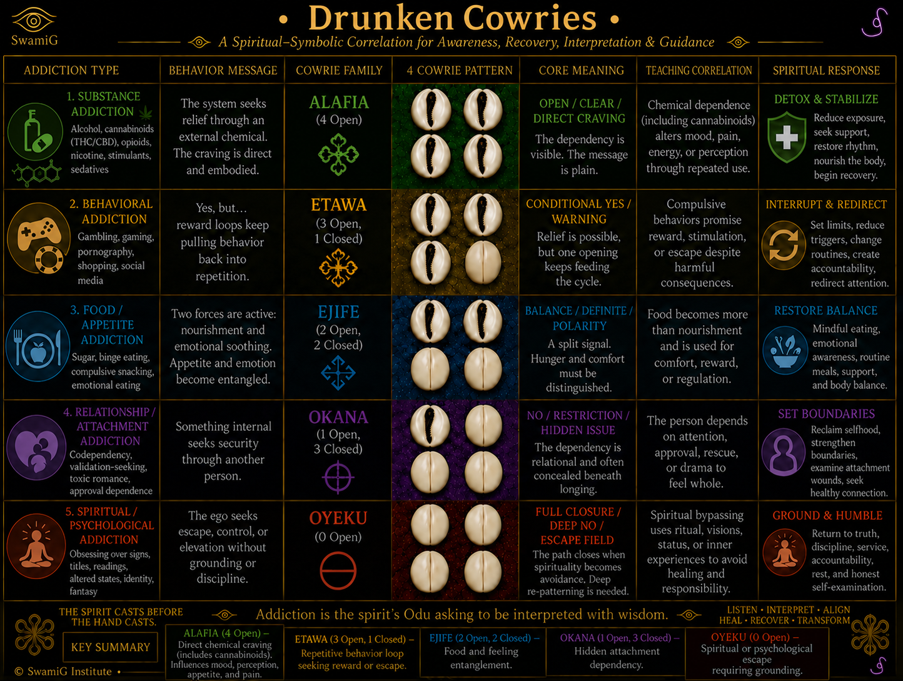
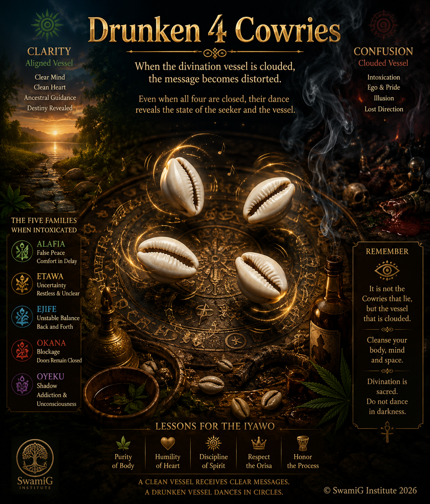
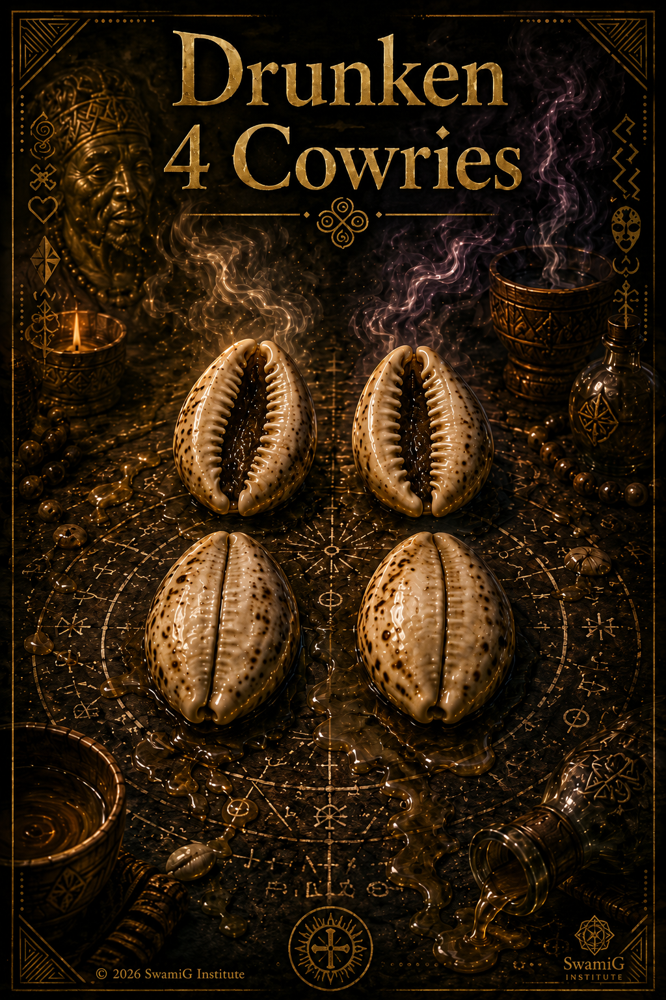

{kind=link}
Course Purpose
This four-week mini course supports Initiates to enter the next stage of spiritual responsibility. The course uses the Drunken Cowries image as a symbolic teaching tool for craving, repetition, appetite, attachment, spiritual escape, and the disciplined return to grounded status.
Recent initiation is not the end of restriction. It is the beginning of visible Iwa, mature self-regulation, spiritual accountability, and wise, informed service.
4-Week Course Map
Alafia
Direct Craving, Detox, and Stabilization
The Initiate examines what must be stabilized before fully re-entering the world.
Etawa & Ejife
Repetition, Appetite, and Emotional Entanglement/Emessment
The Initiate learns to interrupt loops and restore balance.
Okana
Attachment, Boundaries, and Hidden Dependency
The Initiate strengthens boundaries around Ori, Orisha, relationships, and visibility.
Oyeku
Spiritual Escape, Humility, and Grounded Initiation
The Initiate commits to accountability, service, and lifelong discipline.
Course Image
Drunken Cowrie

Alafia: Direct Craving, Detox, and Stabilization

Drunken AlafiaInitiates begin by examining what 3 experiences seeks relief through outside substances, habits, people, stimulation, or escape. Initiating daily requires stabilizing the body, cooling the Ori, and protecting what Orisha has planted.
Teaching Focus
- What is my initiating Odu and name? What is my current relationship to them?
Reflection Questions
- What did initiation help me stop doing?
- What still pulls on my body, attention, or appetite?
- Where do I seek relief instead of alignment and integration?
- What must I reduce, remove, or stabilize before coming fully forward?
Etawa & Ejife: Repetition, Appetite, and Emotional Entanglement

Study the difference between nourishment and compulsion, asymptomatic and infectious. This module examines reward loops, food and appetite, emotional soothing, social media patterns, attention-seeking, and repetitive behaviors. These behaviors (of which you are aware) have minimal short term affect yet are long term infectious STI's (Spiritually Transmitted Infections). These transmissions may have originated as survial strategies within you ancestral lineage that you simply inherited genetically. They maybe survival strategies empolyed by you from past unresolved trauma as a means of survival.
They may have served your ancestors or youself well in the past. You deploy these strategies now but with addictive short term results. Enlightenment and alignment is long term, ancestral and evolutionary. To what are your really devoted? PAST, PRESENT, FUTURE?
Reflection Questions
- How do I initiate a distracting habit that keeps repeating even when I know better?
- What am I feeding: body, emotion, ego, loneliness, or anxiety?
- What does balance look like after initiation?
- What 3-behaviors must be redirected before they re-emerge as energy dissipating patterns?
Trigger - Feeling - Behavior - Better Response - Prayer / Action
Okana: Attachment, Boundaries, and Hidden Dependency
Initiation brings one back into relationship with the Divine. This module focuses on codependency, approval-seeking, toxic romance, rescue patterns, family pressure, godfamily expectations, and the need to reclaim selfhood.
Teaching Focus
- Attachment to feelings as hidden dependency to avoid emotion.
- The difference between love and spiritual leakage.
- Boundaries with family, lovers, god-siblings, and community.
- Sacred privacy after initiation.
- Protecting Ori from drama and overexposure.
Reflection Questions
- Where do I seek approval instead of alignment?
- What pulls me away from my Ori?
- Which relationship patterns must I not return to?
- What must remain private after Initiation?
Post-Initiation Boundary Areas
| Area | Boundary Needed | Sacred Response |
|---|---|---|
| Family | What I will and will not explain. | Speak calmly without arguing my initiation. |
| Romance | Who has access to my body, heart, home, and time. | Choose peace over attachment. |
| Godfamily | How I handle correction, comparison, and conflict. | Remain humble, respectful, and accountable. |
| Social Media | What sacred things should not be posted. | Protect mystery, privacy, and Ori. |
| Self-Care | When I need rest, prayer, cleansing, or silence. | Return to Ori before reacting. |
Oyeku: Spiritual Escape, Bypass. You have arrived at the Truth- Congratulations!
The final module addresses spiritual bypassing: using ritual, visions, status, readings, titles, or altered states to avoid healing, responsibility, and honest self-examination. One must re-initiate daily, become grounded, humble, and accountable.
Teaching Focus
- Initiation as service, not status.
- Spiritual power without ego inflation.
- The danger of hiding behind ritual/spirituality.
- Accountability after initiation.
- Walking forward with discipline, study, and humility.
Reflection Questions
- Where do I use spirituality to avoid truth?
- Am I seeking elevation without grounding?
- What responsibility have I delayed?
- How will I remain accountable after initiation?
12-Month Post-Mat Accountability Plan
| Category | Commitment |
|---|---|
| Daily Practice | Prayer, Ori care, gratitude, reflection, and disciplined conduct. |
| Weekly Practice | Divination, study, elder check-in, and service. |
| Monthly Practice | Cleansing, offering, community contribution, and personal review. |
| Study Focus | Orisha, Odu, songs, prayers, ritual ethics, lineage teachings, and Iwa. |
| Accountability | Elder, mentor, god-sibling, spiritual friend, or study circle. |
| Service | Serve without ego, performance, or public self-elevation. |
| Protection | Guard Ori, boundaries, speech, body, home, and spiritual obligations. |
“As I come re-integrate, I commit to…”
Closing Affirmation
My Ori remains cool.
My Orisha guides my steps.
My Iwa becomes my crown.
My cravings become messages.
My patterns become teachings.
My discipline becomes freedom.
I rise grounded, humble, and wise.